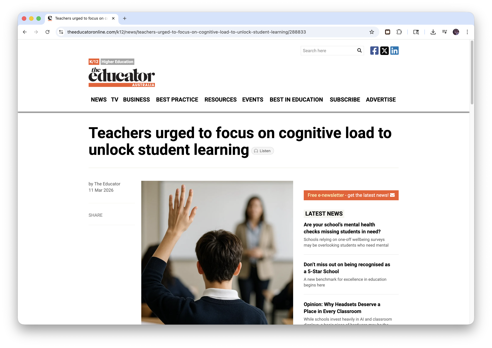

Free Chrome Extension · Open Source
Read anything, the way it deserves to be read.
Liminal Reader wraps any article or long-form page in a clean overlay. Pick your mode, your theme, your pace — and actually finish what you opened.
No account required · Works on any article or long-form page
